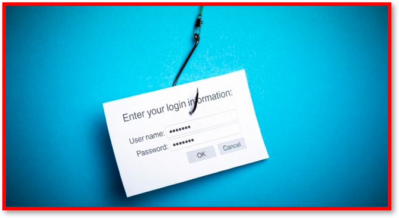
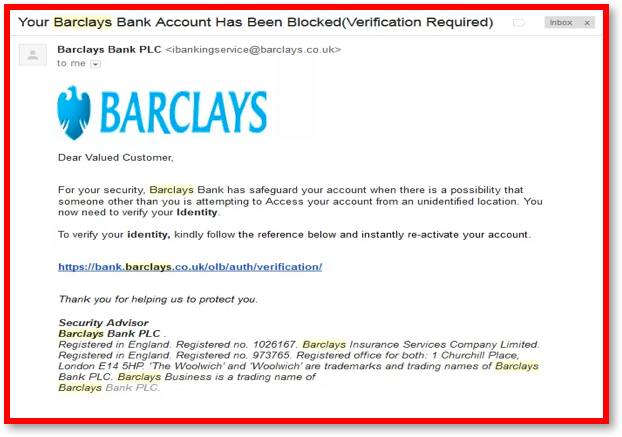
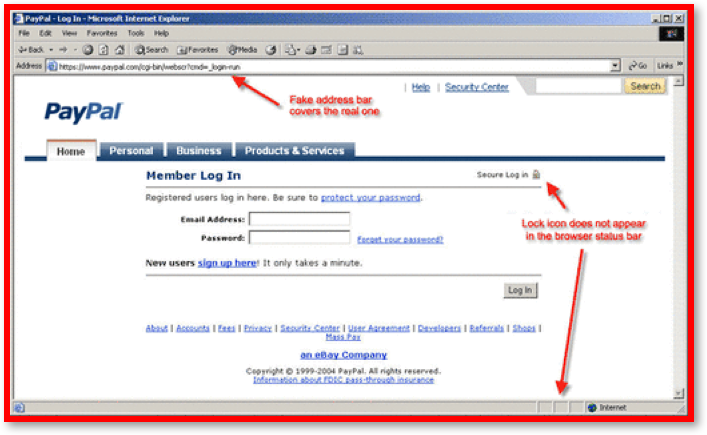
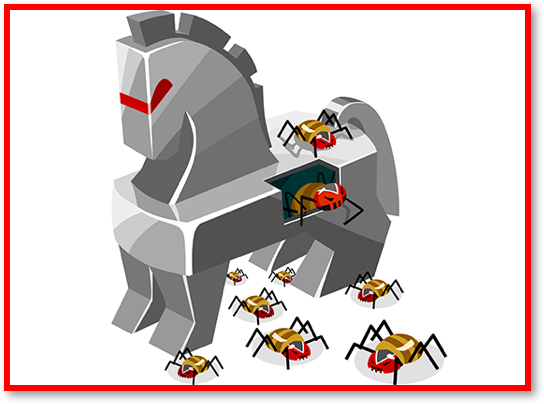
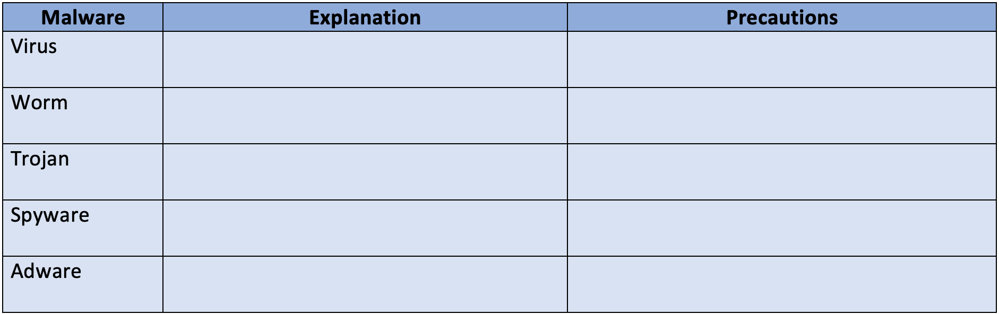

3.6.2 Social Engineering & Malicious Code
Table of Contents
- 1. Social Engineering
- 2. Malicious Code
1 Social Engineering
Learn It: What is Social Engineering?
- We have briefly covered what social engineering is in the previous topic, but we will look at this in more detail. Essentially it is the art of
manipulating peopleso that they give upconfidential information. Peopleare often theweakest pointin security systems, social engineering focuses on people rather than on technology, as the weak point in any security system. There are many different ways tomanipulatepeople tosurrendertheir confidential information or data.- There are
many threatstonetwork security. Most target the computers and communications software, but many target far weaker links: thepeoplewho use them. - A study in 2015 found that
human errorwas the main root cause ofover 52%of all security breaches to networks. - The
biggest problemswere failure tofollow generalpolicies and procedures, general carelessness and a lack of knowledge of threats. - Some of the methods used to
breachnetwork securityneed noknowledge of programming or computers. - These are
low-techcon-tricks, referred to associal engineering, aimed atmanipulatingvulnerable people intodisclosingtheir personal information.
Social Engineering includes the following techniques:
- Blagging (Pretexting).
- Phishing.
- Pharming.
- Shouldering (Shoulder Surfing).
Learn It: Blagging
Blagging or Pretexting
Blagging - Is the act of creating and using an invented scenario to engage a targeted victim in a manner that increases the chance that the victim will divulge information or perform actions that would be unlikely in ordinary circumstances.
- Blagging: This is sometimes called
pretextingand can be doneface-to-face, bytelephoneor bycomputer. - The criminal
invents a scenarioto try to get the victim to divulgesensitive dataorinformation, for example pretending to be a charity or an official such as a police officer, bank employee or an insurance claims investigator. - To help
prevent blagging, the company or organisation should make sure that theyprovidesecurity training to their staff, so that they don't fall for these tricks.
Try It: Blagging
- Q1: Explain with an example what is meant by Blagging?
Learn It: Phishing
 Phishing
Phishing - Is a technique of fraudulently obtaining private information, often using email or SMS.
- The term Phishing comes from fishing -
Baitis spread across theInternetin the hope that people will take abite. - Phishing: Is when criminals send
emailsortextsto people claiming to be from awell-known business, (e.g. a bank or online retailer). - The emails often contain links to
spoof versionsof the company’s website. They request that the user update theirpersonal information(e.g. password or bank account details). When the user inputs this data into the website theyhand itall over to thecriminals, who can then access their genuine account. - You should always beware of
linksin emails or texts. The email is not usually addressed to youpersonallyand often containsspellingandgrammar mistakes. - Sometimes emails may contain a
threatthat something bad is going to happen if you don't click on the link, for example, your account will be closed down in two days' time.
Phishing emails can often be recognised by the following:
- Urgency - They want you to respond quickly, without thinking, for example to supply your bank details before the account is suspended.
- Careless use of language - They often contain spelling and grammatical errors and careless writing style.
- Impersonality - You may not be
addressed personally, but only as Dear Customer. However, as thecriminalsbecome moresophisticatedthey are able to find your personal details fromvarious sourcessuch associal media. - False Links - You may be asked to
clickon alinkwhich leads to a website controlled by thecriminals. - Attachments - Sometimes you may be asked to open
programsordocumentssent with the email; theseattachmentsmay containmalware.
Below is an example of a Phishing Email 
Try It: Phishing Email
- Q2: Suppose that you have just received the email shown above, state at least three signs that would alert you to the fact that this might be a phishing email?
Learn It: Pharming
 Pharming
Pharming - Is a cyber attack technique intended to redirect a website's traffic to an unsafe or fake website.
- Pharming
redirectsweb traffic tofake sites. Theattackerwill place code on yourhard driveor on thenetwork serveritself. - When you type in a
genuine website address, pharming redirects you to afake/bogus websiteand you may beaskedto givepersonalorsensitive information. - Pharming works by
changingthehosts fileon the victim's computer by exploiting a vulnerability in theDomain Name Service (DNS)server software. - The
DNS serversare responsible for translating Internet names into their real IP addresses.
To prevent Pharming users should:
- Check that the HTTP address of the site is the one you intended to visit.
- Check that there is a secure connection (HTTPS) if you have to enter sensitive information.
- Check the site's security certificates.
- Install the latest security patches.
- Install Antivirus Software.
Try It: Phishing Email
- Q3: What is Pharming?
Learn It: Shouldering (Shoulder Surfing)
Shouldering
Shouldering - Is observing a person's private information over the shoulder. e.g. Cashpoint machine PIN number.
- Most security risks are usually
remote theft, but there are other ways to gain unauthorised access to passwords or sensitive information. - Shouldering or Shoulder Surfing refers to using
direct observation techniquesto gain information such aspasswordsorsecurity data. - For example, looking over someone's shoulder while they are
typingin theirATM PINnumber orcomputer password. - To prevent
shoulder surfingyou should shield the keypad from view by using your body or cupping your hand over the keypad. When working on alaptopormobile tablet device, keep your back to a wall with no open sides andextra careshould be taken whenenteringapassword.
Shouldering can occur in the following ways:
- Someone in an office watching others entering passwords.
- Someone watching as they enter their PIN at a cashpoint machine (ATM).
- An employee at a shop or petrol station watching as a PIN is being entered.
- Criminals using binoculars or closed circuit television to watch from a distance or record users entering sensitive information.
Try It: Shouldering
- Q4: Explain what is meant by Shouldering?
2 Malicious Code
Learn It: What is Malicious Code?

- We have briefly covered what malicious code is in the previous topic, but we will look at this in more detail. Essentially MALicious softWARE (Mal WARE) is installed on
someone’s devicewithout theirknowledgeorconsent. - Security is about
keepingyourcomputerand thefiles,programsanddatastored on itsafefrom anumber of hazzards. - These
hazzardscome in the form of malware, hackers, blagging, phishing, pharming, hardware and software faults. - Other
peopleusing the network can also be one of thegreatest risks of all. - Malicious code is the term used to describe any
codein any part of asoftware systemorscriptthat isintendedtocauseundesired effects, security breaches or damage to a system. - Malicious code is an
application security threatthat cannot be efficiently controlled by conventionalantivirus software alone.
Malware
Malware - Is a term used to describe a variety of hostile or instrusive programs or software. Viruses, Worms, Trojans (Trojan Horse), Spyware and Adware and are all types of malware, although there are others.
Malware Software is designed to:
- Disrupt the functioning of a computer system.
- Gain unauthorised access to a computer system.
- Gather other information from the users without their knowledge.
Types of Malware include the following:
- Computer Virus.
- Worms.
- Trojans (Trojan Horse).
- Spyware.
- Adware.
Learn It: Computer Virus
Viruses
Computer Viruses - Are self-replicating pieces of code that can damage data or software. They are often spread via email attachments or removable media such as USB memory sticks.
- A virus is a program that is installed on a computer
without your knowledgeorpermissionwith thepurposeof doing harm. - They
attachthemselves (by copying themselves) tocertain files, e.g. .exe files and autorun scripts. - Users
spreadthem bycopying infected files&activatethem by opening infected files. - Viruses are often
spreadthroughemail attachmentsorinstant messaging services. you may be invited to open a funny image, greeting card, audio or video files. - They may also be
spreadthroughfiles, programsorgamesthat youdownloadfrom theInternetor byloadinganinfected filefrom a memory stick or a CD/DVD. - Some virues are just
annoyinganddon't do any damage, but others willdeleteorchange system filesso that they becomecorruptedor thecomputer becomes unusable. - Some viruses
fill up the hard disk, so that your computerruns very slowlyor becomesunresponsive.
Try It: Viruses
- Q5: Can a CD or DVD containing games software, bought new from a reputable retailer, contain a virus? Why is this unlikely?
Learn It: Worms
Worms
Worms - A computer worm is a standalone malware computer program that replicates itself in order to spread to other computers.
- Worms are like viruses, but they
self-replicatewithout any user help, meaning they canspread very quickly. - They
exploit weaknessesin network security. - Often, it uses a
computer networktospread itself, relying on security failures on the target computer to access it. - Worms almost always cause at least
some harmto thenetwork, even if only byconsuming bandwidth, whereas viruses almost always corrupt or modify files on a targeted computer. - Many worms are designed
only to spread, anddo notattempt tochange the systemsthey pass through. - However, as the
Morris wormandMydoomshowed, even these "payload-free" worms cancause major disruptionby increasing network traffic and other unintended effects. - The motives for trojans may vary, for example, some may give
unauthorised accessto that computer, some maycrash the computer,spread malwareacross the network,corrupt data,reformat disksoraccess sensitive information.
Learn It: Trojans (Trojan Horse)
 Trojans
Trojans - Are legitimate programs developed with the intention of hiding malicious code within. Since they are largely legitimate, they are often not recognised as malware.
- Trojan horse is named after the famous Ancient Greek story of the
Trojan Horse, is a program that
disguised itselfas legitimate software. - Unlike viruses & worms, trojans
don’t replicate themselves, usersinstall themnot realising they have ahidden purpose. - Trojans can be employed by
cyber-thievesandhackerstrying to gain access to users' systems. - Users are typically
trickedby some form ofsocial engineeringinto loading and executing trojans on their systems.
Learn It: Spyware
Spyware
Spyware - Covertly obtains sensitive data, such as credit card numbers and passwords, transmitting the data to a hacker across the Internet.
- Spyware is software that
gathers informationabout apersonororganisationwithout their knowledge. - It is often
usedtotrackandstoreusers' movements on theInternetthrough the use oftracking cookies. - Some spyware may
changecomputer settings, making unauthorised changes in web browser settings or changes to software settings. - Spyware can also be used to
collect personal informationsuch as logins or bank account details. - The use of the term spyware has declined more recently, as the practice of tracking users' visits to different websites is used by many major websites and data mining companies and is not illegal.
Learn It: Adware
Adware
Adware - Downloads unwanted Internet adverts, often observing your online behaviour in order to target specific adverts.
- Adware
analyseswhichInternet sitesa user visits and thenpresents advertsfor products which the user is likely to beinterested in. - Adware, or advertising-supported software, is software that
generates revenuefor its developer by automatically generatingonline advertisementsin the user interface of the software or on a screen presented to the user during the installation process. - The software may generate two types of revenue:
one is for the display of the advertisementand another on apay-per-clickbasis, if the user clicks on the advertisement. - The software may implement advertisements in a
variety of ways, including a static box display, a banner display, full screen, a video, pop-up advert in some other form. - Adware is also sometimes
described as malwareand anti-adware software is available. - Although most adware operates
legallyand some adware manufacturers have even sued antivirus companies for blocking adware.
Learn It: Other Forms of Malware
Ransomware
- Ransomware is a type of
malwarefromcryptovirologythat threatens to publish the victim's data or block access to it unless aransom is paid. - While some simple ransomware may
lockthe system in a way which is not difficult for a knowledgeable person to reverse, moreadvanced malwareuses atechniquecalledcryptoviral extortion, in which itencryptsthe victim's files, making theminaccessible, anddemands a ransom paymentto decrypt them. - Ransomware attacks are typically carried out using a
Trojanthat isdisguisedas alegitimate filethat the user is tricked into downloading or opening as an email attachment.
 Rootkits
Rootkits
- A rootkit is a collection of computer software, typically
malicious, designed toenable accessto a computer or an area of its software that is not otherwise allowed andoften masksits existence or the existence of other software. - The term rootkit is a concatenation of
rootand the wordkit. - Rootkits allows an
unauthorised userto gain full control over a computer, including the host operating system, toavoid detection.
Try It: Malware Table
Copy and complete the following malware table giving an explanation of each and stating the precautions that should be taken to protect a computer system: 
Badge It: Exam Questions
Silver - Answer the following questions:
- Define the term phishing? (1 Mark)
- Describe two ways that it is often possible to detect a phishing email? (2 Marks)
Upload to Fundamentals of Cyber Security - Social Engineering: Silver on BourneToLearn
Badge It: Exam Questions
Gold - Answer the following questions:
- Describe the term social engineering? (3 Marks)
- Briefly explain the four techniques that are used in social engineering? (4 Marks)
Upload to Fundamentals of Cyber Security - Social Engineering: Gold on BourneToLearn
Badge It: Exam Questions
Platinum - Answer the following questions:
- Describe one other way in which a criminal may obtain personal information about someone without their consent or knowledge? (4 Marks)
- In the context of cyber security, what is a trojan horse? (2 Marks)
- Describe the purpose and function of spyware? (2 Marks)
- What is adware and is it dangerous to your computer? (2 Marks)
Upload to Fundamentals of Cyber Security - Social Engineering: Platinum on BourneToLearn